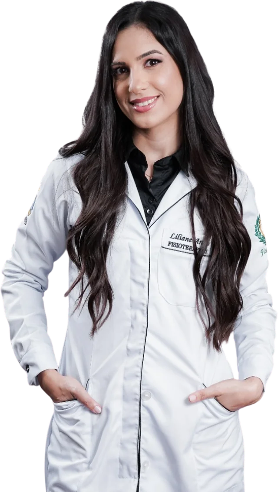
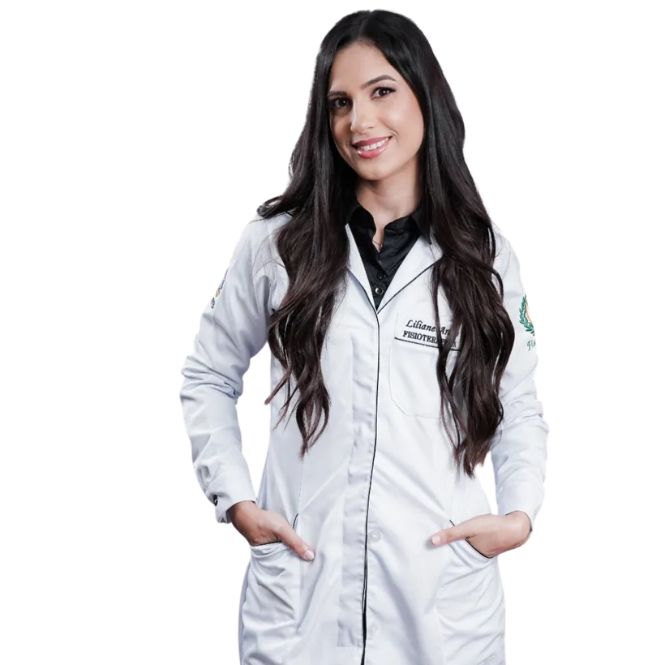

Exercícios
Os exercícios ensinam o seu corpo a ativar a musculatura profunda do abdômen no dia a dia.

No seu tempo e com acompanhamento de perto.
Depois da gestação, ela é formada por duas coisas que acontecem juntas:
Os músculos retos do abdômen se afastam um do outro, principalmente na altura do umbigo.
A musculatura do abdômen fica frouxa e perde a firmeza para sustentar o centro do corpo.
A boa notícia: mesmo meses ou anos depois, dá para trabalhar essa musculatura com segurança.
Músculos juntos: os dois retos do abdômen ficam lado a lado, unidos no meio pela linha alba.Continue rolando para ver o que acontece Com diástase: a linha alba se alonga, os músculos se afastam (principalmente na altura do umbigo) e ficam mais frouxos.
A boa notícia: mesmo meses ou anos depois, dá para trabalhar essa musculatura com segurança.
Para você que já passou dos primeiros meses depois do parto e ainda percebe:
Eu não confiro só a medida do afastamento dos músculos. Também faço testes para saber a sua competência muscular: o quanto o seu abdômen consegue contrair e sustentar o corpo.
Depois da avaliação, eu traço um protocolo de tratamento individualizado, direcionado para o seu caso e com metas claras para cada fase.
Exercícios terapêuticos associados à eletroestimulação, 2 vezes por semana, sempre com a minha orientação.
O meu tratamento é baseado em evidência científica. E as evidências mostram que a eletroestimulação, associada aos exercícios, é o padrão-ouro na reabilitação da diástase.
Os exercícios ensinam o seu corpo a ativar a musculatura profunda do abdômen no dia a dia.
A eletroestimulação ajuda a despertar e fortalecer essas fibras, potencializando o trabalho de cada sessão.
Sou fisioterapeuta formada pela Universidade Federal da Paraíba, com pós-graduação em Fisioterapia Dermatofuncional e Obstétrica — e escolhi dedicar minha carreira ao cuidado de gestantes e puérperas porque acredito que essas fases merecem atenção especializada, acolhimento e muita dedicação.
Uno os conhecimentos da dermato ao cuidado obstétrico para oferecer não só a técnica certa, mas o olhar atento que cada mulher precisa nesse momento tão intenso da vida.
Cuidar bem de você é o que me move.
As evidências científicas e a literatura mostram que o tratamento da diástase precisa de, no mínimo, 12 semanas. Por isso, eu trabalho com um único plano.
Plano Completo
12 semanas
24 sessões · 2x por semana
À vista · Pix ou dinheiro
ou 10x de R$ 360 sem juros no cartão (total R$ 3.600)
Valor por sessão: a partir de R$ 135
Suas 24 sessões
O que está incluso
Do primeiro ao último dia, com acompanhamento de perto.
Sessões desmarcadas com 24h de antecedência podem ser remarcadas dentro do período do plano.

É só me responder aqui no WhatsApp que a gente agenda a sua avaliação.
Vou adorar cuidar dessa fase com você.